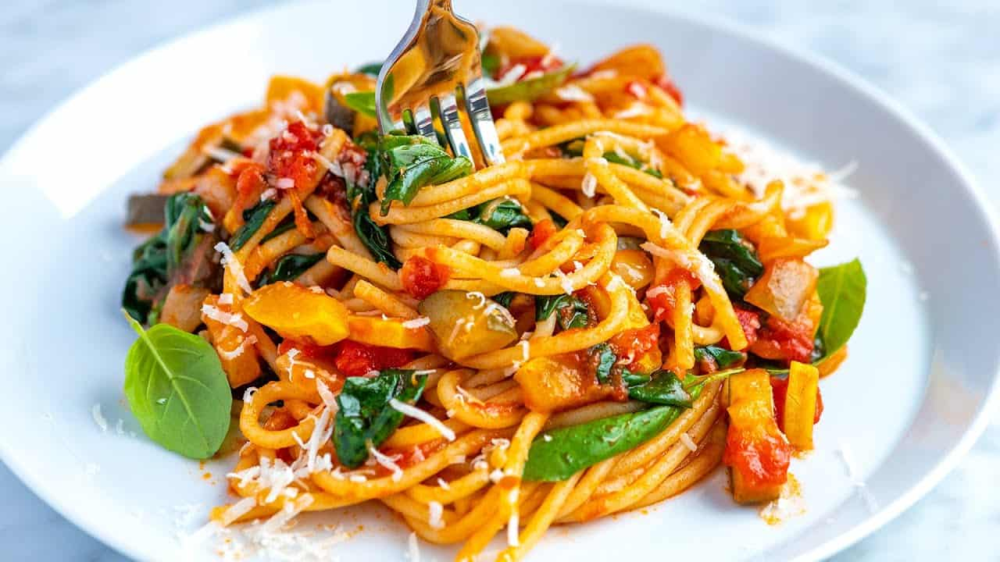

what is yummi pasta ?
Italian pasta (pronounced “PAS-tah”) is a collective name for a category of food made from wheat flour and water, sometimes with egg. The name refers to the resulting dough (pasta also means “dough”) that is rolled out and cut into various shapes.
Pasta is cooked in water and served with a sauce. All in all, pasta is one of the most famous, most eaten and certainly the most loved dishes in the world. There are more than three hundred different types of pasta. The most popular forms are:
- Spaghetti: thin round long strings
- Lasagne: wide, flat sheets
- Macaroni: short, narrow, curved tubes
- Papardelle: flat, fairly wide ribbons
- Penne: short tubes
- Ravioli: dough cushions with a filling
why we like pasta :
- every one in our family love it
- so we have a happy time when we serve it
- i think its a really delicious food.i know its the same oponion between most of people specially italians.